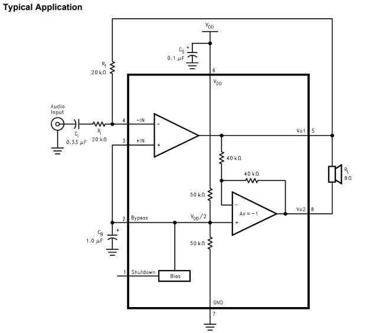

- add an output device to a microcontroller board you've designed,and program it to do something.
- measure the power consumption of an output device.
Introduction
In computing, an output device is a piece of computer hardware equipment that uses received data and commands from an information processing system in order to perform a task (wiki).In our daily life we using somany output devivces , take a look at our computer speaker is output device ,Monitor is a output device (if it have touch interface the it input device too).In this we are gonna make a output device and i don't want to build something not usefull .so first i checked our fab inventory after that started to deign the PCB.
Burglar alarm
A burglar alarm is an electric device that makes a bell ring loudly if someone tries to enter a building by force.it's a Security alarm .
So in this week i,am plannig to make my own burglar alarm.
Circut Design
For burglar alarm we need to use Sensor as input device and for output we are using a speaker/buzzer. first we need to choose the sensor , i choosed Hall effect sensor because its output voltage in response to a magnetic field ,so we can measure the magnetic field based on the output voltage and if we can put the sensor and magnet between our door and we can progarmme it to alarm when the magnetic field is low . and it's very low power and smaller footprint , so that's why i choosed Hall effect sensor.
In our lab we have A1302-Linear Hall-Effect Sensor so first i started to check the datasheet. i found one datasheet :- https://www.allegromicro.com/~/media/Files/Datasheets/A1301-2-Datasheet.ashx based on this it will operate at 4.5 to 6.0 V so we don't need to use a voltage regulator.
A1302-Continuous-Time Ratiometric Linear Hall-Effect Sensor
- Low-noise output
- Fast power-on time
- Ratiometric rail-to-rail output
- 4.5 to 6.0 V operation
- Solid-state reliability
- Factory-programmed at end-of-line for optimum performance
- Robust ESD performance
Piezo buzzer
Piezo buzzer is an electronic device commonly used to produce sound. Light weight, simple construction and low price make it usable in various applications like car/truck reversing indicator, computers, call bells etc.
Piezo buzzer is based on the inverse principle of piezo electricity discovered in 1880 by Jacques and Pierre Curie. It is the phenomena of generating electricity when mechanical pressure is applied to certain materials and the vice versa is also true. Such materials are called piezo electric materials. Piezo electric materials are either naturally available or manmade. Piezoceramic is class of manmade material, which poses piezo electric effect and is widely used to make disc, the heart of piezo buzzer. When subjected to an alternating electric field they stretch or compress, in accordance with the frequency of the signal thereby producing sound.
A piezoelectric disk generates a voltage when deformed (change in shape is greatly exaggerated) .
Magnetic Buzzer
In here we are using the Magnetic Buzzer . Like piezo technology, magnetic buzzers are available in transducer and indicator configurations. In a magnetic buzzer, the transistor acts as the driving circuit. Indicators include the transistor, creating a tone when a dc voltage is applied. Transducers lack this transistor, requiring a square wave signal to operate properly.
Source :- https://www.cui.com/product-spotlight/piezo-and-magnetic-buzzers
Testing
First i tested the hall-efect sensor and Buzzer with arduino because i don't want to waste the resource and time.first i built sensor module with copper sheet and solder it on a old pcb.
Testing Video
Circut Design

I started to design in Autodek eagle.
after the design i relized buzzer position will cause some problem in Hall-effect sensor also i did't used a Power-switch.so i re-designed the PCB and added a power switch.
this is the final board design
PCB Milling
I exported board as Monochrome PNG and milled with Modela
Completed Milling ,Drilling and Cutting.
Soldering
Components
- ATtiny45 x 1
- Buzzer x 1
- Hall-effect sensor x 1
- 0.1 uF Cap x 1
- Coil cell battery x 1
- Coil cell battery Holder x 1
- ISP header x 1
/*
* Author :- Salman Faris
* Docs :- http://archive.fabacademy.org/2018/labs/fablabkochi/students/salman-faris/week12.html
*
*/
void setup() {
pinMode(2, INPUT_PULLUP); //
pinMode(3, OUTPUT);
}
void loop() {
int data = analogRead(2);
if (data >= 500 )
{
digitalWrite(3, HIGH);
}
else
{
digitalWrite(3, LOW);
}
}
Uploaded the code using FabISP.
Demonstration Video
also i attached module in our lab entrance , so we can hear someone enter the room.
Servo Motor
servomotor is a rotary actuator or linear actuator that allows for precise control of angular or linear position,
What's inside the servo?
Inside there is a pretty simple set-up: a small DC motor, potentiometer, and a control circuit. The motor is attached by gears to the control wheel. As the motor rotates, the potentiometer's resistance changes, so the control circuit can precisely regulate how much movement there is and in which direction.
When the shaft of the motor is at the desired position, power supplied to the motor is stopped. If not, the motor is turned in the appropriate direction. The desired position is sent via electrical pulses through the signal wire. The motor's speed is proportional to the difference between its actual position and desired position. So if the motor is near the desired position, it will turn slowly, otherwise it will turn fast. This is called proportional control. This means the motor will only run as hard as necessary to accomplish the task at hand, a very efficient little guy.
How is the servo controlled?
Servos are controlled by sending an electrical pulse of variable width, or pulse width modulation (PWM), through the control wire. There is a minimum pulse, a maximum pulse, and a repetition rate. A servo motor can usually only turn 90° in either direction for a total of 180° movement. The motor's neutral position is defined as the position where the servo has the same amount of potential rotation in the both the clockwise or counter-clockwise direction. The PWM sent to the motor determines position of the shaft, and based on the duration of the pulse sent via the control wire; the rotor will turn to the desired position. The servo motor expects to see a pulse every 20 milliseconds (ms) and the length of the pulse will determine how far the motor turns. For example, a 1.5ms pulse will make the motor turn to the 90° position. Shorter than 1.5ms moves it in the counter clockwise direction toward the 0° position, and any longer than 1.5ms will turn the servo in a clockwise direction toward the 180° position.
When these servos are commanded to move, they will move to the position and hold that position. If an external force pushes against the servo while the servo is holding a position, the servo will resist from moving out of that position. The maximum amount of force the servo can exert is called the torque rating of the servo. Servos will not hold their position forever though; the position pulse must be repeated to instruct the servo to stay in position.
Note :- I used SoftwareServo.h library ,in order to to work with SoftwareServo we need to modify the header file. for this we have to go into the .h and .cpp files and change "WProgram.h" to Arduino.h.
CIRCUT DESIGN
I used ATtiny44 for controlling servo.

Board Layout
I also FTDI pin's for future purpose.
Milling & Soldering
Hero shot
Programming
First i burned Arduino bootloader and after that uploded progarmme using FabISP.First i used Arduino Servo.h library i can't any output from the servo because we don't have an 16-bit timer in my servo port. after googling i found Software Servo (SoftwareServo.h) after that it's worked great , and i did't used any Voltage Regulator so i can only drive 5v relay.
The Software Servo Library can drive servos on all of your pins simultaneously. The API is patterned after the wiring.org servo library but the code is different. You are not limited to 8 servos, but you must call the SoftwareServo::refresh() method at least once every 50ms or so to keep your servos updating.(Source:- https://playground.arduino.cc/ComponentLib/Servo
#include <SoftwareServo.h>
SoftwareServo servo;
void setup()
{
servo.attach(1);}
void loop() {
int pos;
for(pos = 0; pos < 90; pos += 1) {
servo.write(pos);
delay(10);
SoftwareServo::refresh();
}
for(pos = 90; pos>=1; pos-=1) {
servo.write(pos);
delay(10);
SoftwareServo::refresh();
}
}
Demonstration Video
Audio Amplifier
An audio amplifier is an electronic device that increases the strength (amplitude) of audio signals that pass through it. An audio amplifier amplifies low-power audio signals to a level which is suitable for driving loudspeakers
In here am using Texas Instruments LM4861 Audio Amplifier.it's a 8-Lead SOIC pakage.The LM4861 is a bridge-connected audio power amplifier capable of delivering 1.1W of continuous average power to an 8Ω load with 1% THD+N using a 5V power supply
FEATURES
- No output coupling capacitors, bootstrap capacitors, or snubber circuits are necessary
- Small Outline (SOIC) packaging
- Compatible with PC power supplies
- Thermal shutdown protection circuitry
- Unity-gain stable
- External gain configuration capability
KEY SPECIFICATIONS
- THD+N for 1kHz at 1W continuous average output power into 8Ω 1.0% (max)
- Output power at 10% THD+N at 1kHz into 8Ω 1.5 W (typ)
- Shutdown Current 0.6µA (typ)
Connection Diagram
Typical Application
I used Typical Application diagram from the datasheet (source:- http://www.ti.com/lit/ds/symlink/lm4861.pdf
I started to design in Eagle, in our lab we don't have an 0.33 uf capacitor so i used four 0.1 uf also used two 10 ohm resistor for 20 ohm.
for capacitor we need to make it parallel connection to get the value.
But in case of Resistor we need to make it Series to get the tottal resistance.
Circuit Design

board layout
Milling and Soldering
Milled with 1/64 bit and drilled and cuted with 1/32 bit.
Hero shot
Demonstration Video
Group Assignment
In this week group assignment was measure the power consumption of output device that we used.i tested one by one and i used UNI-T UT61A multimeter to measure the power consumption.
- Buzzer
- Servo Motor
- 16x2 LCD Display
In this datasheet it shows the operating power is 3-6V DC / 25mA , but we got around 19mA in 5V .
In this datasheet i did't got any information about the power consumption,so i measured with my multimeter.but to measure the current consumed by a servo you need to connect an oscilloscope across a low value resistor in series with the servo ground. 1 ohm is the lowest commonly available value but this may be too high and disrupt the operation of the servos, so 1/2 ohm or lower is recommended. You can make a 1/2 ohm resistor by connecting two 1 ohm resistors in parallel as shown in this diagram, for this purpose i used 100 ohm for this purpose.
In here i used 100 ohm Current Shunt Resistor,these resistors are low resistance precision resistors used to measure AC or DC electrical currents by the voltage drop those currents create across the resistance. V = I × R
I got around 75mA in Multimeter
16×2 LCD is named so because; it has 16 Columns and 2 Rows. There are a lot of combinations available like, 8×1, 8×2, 10×2, 16×1, etc.All the above mentioned LCD display will have 16 Pins and the programming approach is also the same and hence the choice is left to you. Below is the Pinout and Pin Description of 16x2 LCD Module:
I connecte shunt resistor across the Groud that is VSS pin , and connected VDD directly to the 5v vcc and measured current using a multimeter.
and i got around 79.8 uA.but it's just the flow of voltage for Enable the LCD we need to HIGH the E-Enable pin of LCD , after i got around 513 uA.
Video